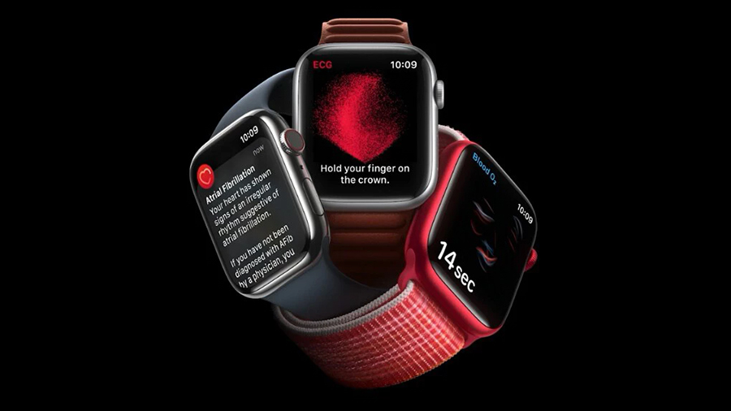
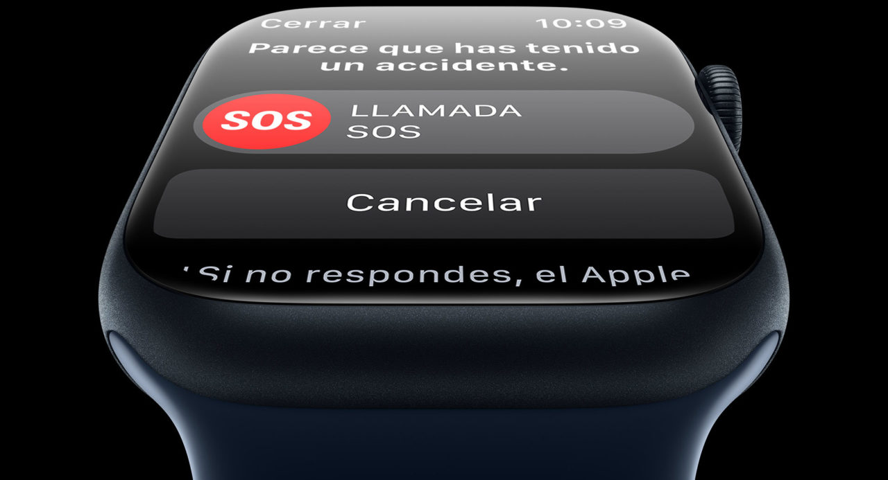
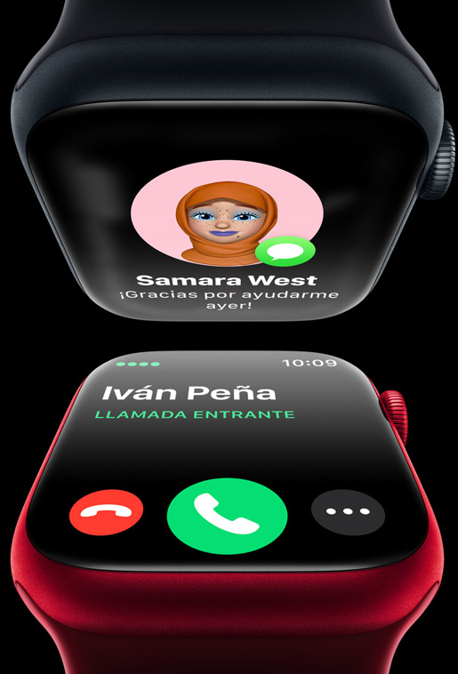

Cuenta con una pantalla de retina activa que alcanza los 2.000 nits de brillo máximo , el doble que los anteriores Apple Watch.
El titanio ofrece el equilibrio perfecto entre peso, dureza y resistencia a la corrosión.
Resistente al polvo IP6X.
Resistente a 100 metros bajo el agua.
Nuevo botón Acción que te permite acceder mas rápido a multitud de funciones.
Antena GPS: El GPS de doble frecuencia y alta precisión permite calcular distancias, ritmo y rutas con exactitud.
Doble altavoz: Un segundo altavoz aumenta el volumen de las llamadas y de Siri.
Cuenta con un acelerómetro de alta frecuencia y un profundímetro el cual mide la profundidad marina en tiempo real de hasta 40 metros asi como la temperatura del agua.
El nuevo reloj tiene bordes elevados para proteger el cristal plano de zafiro de impactos laterales.
La Digital Crown y el botón lateral son más grandes para que puedas usarlos con guantes.
La autonomía de la batería es de 36 horas con un uso normal del movil y de 60 horas con el modo de Bajo Consumo.
Salud

Los sensores del Apple Watch te darán informacion muy valiosa sobre tu estado físico.
Incluye un sensor de temperatura que te toma la temperatura mientras duermes.
Consulta el tiempo que has pasado en las fases de sueño REM, esencial y profundo. Descubre cuántas veces te has despertado.
Consulta tu frecuencia cardíaca cuando quieras.
Mide tu oxígeno en sangre.
Giroscopio mejorado.
La app Medicación te permite llevar un control de las medicinas, suplementos o vitaminas que tomas,y también registrarlos fácilmente con el Apple Watch.
Posee un nuevo sensor de temperatura para poder ofrecer funciones avanzadas de control del ciclo menstrual, incluidas estimaciones retrospectivas de ovulación.
Fitness
La app entreno se ha mejorado y se han añadido nuevos indicadores y vistas que te ofrecen toda la información necesaria para batir tu mejor marca.
Añade datos como la longitud de zancada o el tiempo de contacto con el suelo.
Potencia en carrera : esta prestación mide al instante el esfuerzo y te ayuda a mantener el nivel sin agotarte.
El Apple Watch aguanta altitudes, temperaturas y entornos extremos.
La app profundímetro nos muestra el tiempo, la profundidad actual, la temperatura del agua, la duración de la inmersión y la profundidad máxima alcanzada.
Seguridad

Detecta si has tenido un accidente grave y llama automaticamnete al 112, envía tu ubicación a los servicios de emergencia y avisa a tus contactos definidos.
Cuenta con una sirena que emite un sonido para pedir ayuda que se oye a 180 metros de distancia.
Su botón lateral sirve para las prestaciones de seguridad. Dejalo pulsado para llamar a los servcicios de emergencia , activar la sirena o consultar tus datos de Salud.
Conecta con tu mundo

El servicio de itinerancia te permite hacer llamadas y enviar mensajes en culaquier sitio del mundo.
Escucha música donde quieras y cuando quieras.
Tu muñeca te señala el camino con la aplicacion de Mapas.
Paga al instante con tu app de Apple Pay.
Pidele a Siri que te diga lo que necesitas saber, el sitio al que quieres ir o el tiempo que hace hoy.
Descarga las apss en el App Store sin tener que hacerlo desde el Iphone.